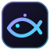

<!doctype html>
<html lang="en">
<head>
  <meta charset="utf-8">
  <meta name="viewport" content="width=device-width, initial-scale=1">
  <title>Fisch Macro</title>
  <link rel="stylesheet" href="app.css">
</head>
<body>
  <div class="app">
    <aside class="sidebar" aria-label="Main navigation">
      <div class="brand">
        
        <div>
          <div class="brand-name">Fisch Macro</div>
          <div class="brand-sub" id="brand-version">Desktop</div>
        </div>
      </div>
      <nav class="nav" id="nav"></nav>
      <div class="side-foot">
        <div class="side-status" id="side-status">
          <span class="dot" id="side-dot"></span>
          <div>
            <div class="side-status-title" id="side-status-title">Stopped</div>
            <div class="side-status-sub" id="side-status-sub">F6 to start</div>
          </div>
        </div>
        <button class="btn btn-primary btn-block" id="side-start" type="button"></button>
      </div>
    </aside>
    <main class="main" id="main" tabindex="-1"></main>
  </div>
  <div class="toasts" id="toasts" aria-live="polite"></div>
  <div class="modal-root" id="modal-root"></div>
  <script src="qrc:///qtwebchannel/qwebchannel.js"></script>
  <script src="icons.js"></script>
  <script src="app.js"></script>
</body>
</html>
